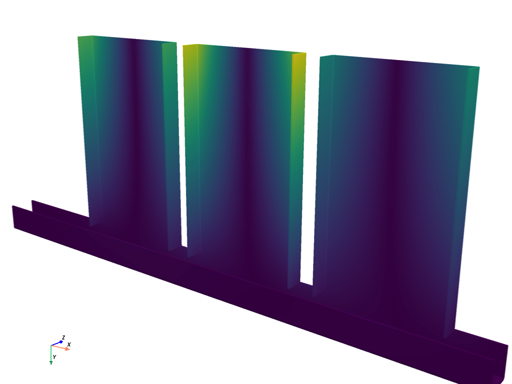

注釈
Go to the end to download the full example code
Visualize Modal Analysis of a Pump Bracket#
The following example demonstrates how to use PyVista to visualize the modal analysis of a pump bracket based on point arrays representing mode shapes for different modes of vibration.
Background Modal analysis is the study of the dynamic properties of mechanical structures in the frequency domain. It is a common technique in structural dynamics, particularly for automotive, aerospace, and civil engineering applications.
A mode shape is the deformation pattern that occurs at a specific natural frequency, or mode, of a structure. When a structure is excited by an external force, it responds at all its natural frequencies with each mode shape being independent of the others. In this example, we will visualize the mode shapes to get an understanding of how the pump bracket responds to different modes of vibration.
import numpy as np
import pyvista as pv
from pyvista import examples
Load the dataset#
Start by loading the dataset using download_pump_bracket().
This example demonstrates the visualization of the pump bracket's mode shape, the representation of its magnitude, and an animation of its displacement. The dataset used in this example contains 10 mode shapes (disp_0 to disp_9).
dataset = examples.download_pump_bracket()
dataset
Plot the Dataset#
Choose a mode shape from the available arrays in the dataset. Each "disp_N" array represents an eigen solution or a single mode shape for a given mode of vibration.
Plot the 4th mode of the dataset. This is the first torsional mode for the bracket.
Visualize Displaced Mode Shape#
We will now visualize the mode shapes of the pump bracket by displacing the
original dataset using warp_by_vector.
# Create a plotter
pl = pv.Plotter()
# Add the undeformed pump bracket
pl.add_mesh(dataset, color="white", opacity=0.5)
# Add the deformed pump bracket with the mode shape
warp = dataset.warp_by_vector('disp_2', factor=0.1)
pl.add_mesh(warp, show_scalar_bar=False, ambient=0.2)
pl.camera_position = cpos
pl.enable_anti_aliasing('fxaa')
pl.show()
Animate the Mode Shape Displacement#
Animate the mode shape's displacement by updating the vertex positions at each time step. For a more realistic animation, we use a sinusoidal function to vary the displacement.
# feel free to change this to visualize different mode shapes
mode_shape = 'disp_6'
# copy the dataset as we will modify its coordinates
ds = dataset.copy()
pl = pv.Plotter(off_screen=True)
pl.add_mesh(ds, lighting=True, color='w')
pl.camera_position = cpos
pl.enable_anti_aliasing('fxaa')
n_frames = 16
pl.open_gif("pump_bracket_mode_shape.gif")
for phase in np.linspace(0, 2 * np.pi, n_frames, endpoint=False):
# use the original unmodified points
pl.update_coordinates(dataset.points + ds[mode_shape] * np.cos(phase) * 0.05)
pl.write_frame()
pl.close()
Total running time of the script: ( 0 minutes 15.910 seconds)